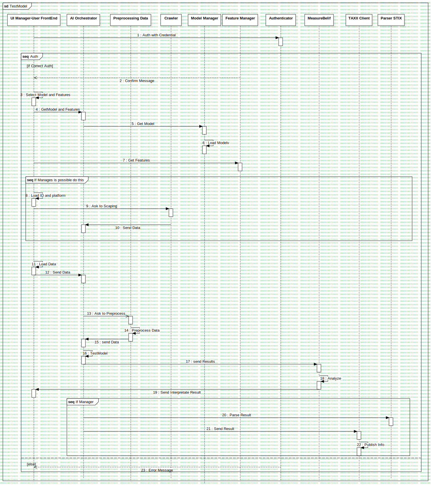

Interaction1
UMLInteraction
Untitled
::
Collaboration3
::
Interaction1
Description
none
Diagrams

TestModel
Fragments
Auth
If Manages is possible do this
If Manager
Participants
UI Manager-User FrontEnd
AI Orchestrator
Preprocessing Data
Model Manager
MeasureBelif
Authenticator
Feature Manager
Crawler
TAXII Client
Parser STIX
Messages
Auth with Credential (UI Manager-User FrontEnd→Authenticator)
Confirm Message (Feature Manager→UI Manager-User FrontEnd)
Select Model and Features (UI Manager-User FrontEnd→UI Manager-User FrontEnd)
GetModel and Features (UI Manager-User FrontEnd→AI Orchestrator)
Get Model (AI Orchestrator→Model Manager)
Load Modelv (Model Manager→Model Manager)
Get Features (UI Manager-User FrontEnd→Feature Manager)
Load ID and platform (UI Manager-User FrontEnd→UI Manager-User FrontEnd)
Ask to Scaping (UI Manager-User FrontEnd→Crawler)
Send Data (Crawler→AI Orchestrator)
Load Data (UI Manager-User FrontEnd→UI Manager-User FrontEnd)
Send Data (UI Manager-User FrontEnd→AI Orchestrator)
Ask to Preprocess (AI Orchestrator→Preprocessing Data)
Preprocess Data (Preprocessing Data→Preprocessing Data)
send Data (Preprocessing Data→AI Orchestrator)
TestModel (AI Orchestrator→AI Orchestrator)
send Results (AI Orchestrator→MeasureBelif)
Analyze (MeasureBelif→MeasureBelif)
Send Interpretate Result (MeasureBelif→UI Manager-User FrontEnd)
Parse Result (AI Orchestrator→Parser STIX)
Send Result (AI Orchestrator→TAXII Client)
Publish Info (TAXII Client→TAXII Client)
Error Message (Authenticator→UI Manager-User FrontEnd)
Properties
Name
Value
name
Interaction1
stereotype
null
visibility
public
isReentrant
true
Owned Elements
TestModel